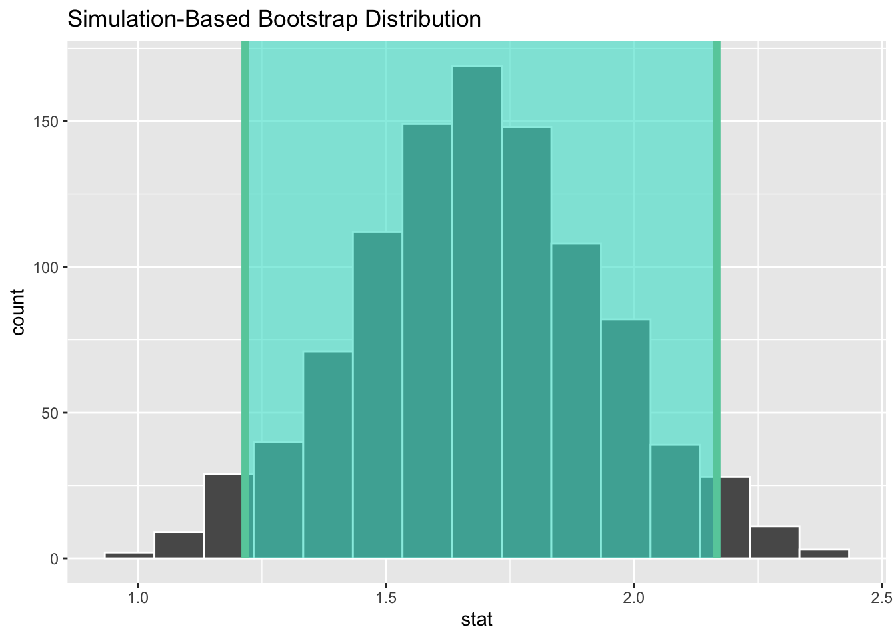
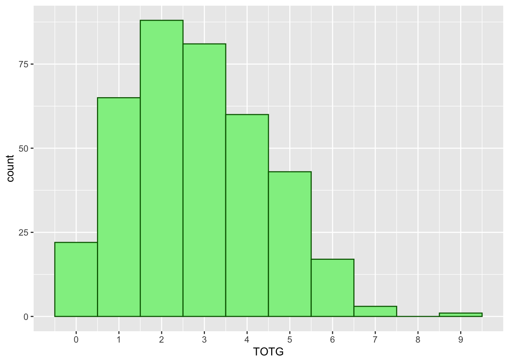

Chapter 8 T-Tests for Means
This Chapter supplements the material on t-tests in the second part of Lecture 6.
In this chapter, I will introduce the t-test, a classic analysis technique that is used to compare two groups together.
8.1 The Christmas Music Study
We can also use bootstrapping as an entry point to a new analysis situation, where we are comparing two groups. This could be for example in a classic experimental context; treatment and control.
Remember, t-tests can be done in any analysis setting, and it does not require bootstrapping at all. It just so happens that they are nicely explainable at this point.
So, here’s the study I’ll use for the rest of this chapter, and pick up again a couple of chapters from now. Participants come in and proofread a passage of text — a genuinely tedious task, by design — with background audio playing. I tell them the study is about concentration and background noise, which is true as far as it goes, but isn’t the whole story. Half the participants get silence, half get Christmas music (which is, delightfully, one of the few things guaranteed to mildly irritate almost everybody, making it a gift for a researcher even if not for the participants). Before and after the task, I measure how irritated people feel, using four items — irritated / annoyed / tense / on edge, each rated 1-7 — and average them into a single composite score, IRRIT. The four items hold together well as one measure: Cronbach’s alpha across them is a healthy 0.86 in this sample, so treating them as a single composite rather than four separate numbers is a reasonable thing to do.
Before looking at any numbers, there’s a design question worth sitting with, because it’s the reason this chapter runs two different-looking t-tests on what can feel like the same question.
Suppose the Christmas-music group’s irritation goes up from before the task to after it. Is that enough, on its own, to conclude Christmas music is irritating? No — because the task itself is boring. Twenty minutes of proofreading a dull passage would probably wind most people up a bit regardless of what’s playing in the background, including nothing at all. A rise from baseline to post-task doesn’t tell you the music did anything, because the task alone might have. What actually answers that question is a comparison group who did the identical boring task in silence, so I can see whether the Christmas-music group ended up more irritated than boredom alone would predict. That’s why this chapter needs both an independent-samples comparison (Christmas vs silence, after the task) and a paired comparison (the Christmas group’s own before-and-after) — they answer two different questions, and only one of them can rule out “it was just the task.”
8.2 Independent-Samples T-Test
The first thing to do is read in the data and describe it.
## # A tibble: 6 × 7
## ID GROUP IRRIT_IRRITATED IRRIT_ANNOYED IRRIT_TENSE IRRIT_ONEDGE IRRIT
## <dbl> <chr> <dbl> <dbl> <dbl> <dbl> <dbl>
## 1 1 Silence 3 4 2 5 3.5
## 2 2 Silence 3 3 4 3 3.25
## 3 3 Silence 3 3 3 3 3
## 4 4 Silence 5 4 4 4 4.25
## 5 5 Silence 4 2 4 3 3.25
## 6 6 Silence 3 2 3 3 2.75## vars n mean sd median trimmed mad min max range skew
## ID 1 30 15.50 8.80 15.50 15.50 11.12 1.0 30.00 29.00 0.00
## GROUP* 2 30 1.50 0.51 1.50 1.50 0.74 1.0 2.00 1.00 0.00
## IRRIT_IRRITATED 3 30 4.10 1.40 4.00 4.21 1.48 1.0 6.00 5.00 -0.46
## IRRIT_ANNOYED 4 30 4.13 1.38 4.00 4.08 1.48 2.0 7.00 5.00 0.37
## IRRIT_TENSE 5 30 4.13 1.17 4.00 4.17 1.48 2.0 6.00 4.00 -0.25
## IRRIT_ONEDGE 6 30 3.93 1.20 4.00 3.92 1.48 1.0 7.00 6.00 0.12
## IRRIT 7 30 4.08 1.08 4.25 4.12 1.30 1.5 5.75 4.25 -0.37
## kurtosis se
## ID -1.32 1.61
## GROUP* -2.07 0.09
## IRRIT_IRRITATED -0.52 0.26
## IRRIT_ANNOYED -0.72 0.25
## IRRIT_TENSE -0.95 0.21
## IRRIT_ONEDGE 0.37 0.22
## IRRIT -0.82 0.20| Name | ED_IND |
| Number of rows | 30 |
| Number of columns | 7 |
| _______________________ | |
| Column type frequency: | |
| factor | 1 |
| numeric | 6 |
| ________________________ | |
| Group variables | None |
Variable type: factor
| skim_variable | n_missing | complete_rate | ordered | n_unique | top_counts |
|---|---|---|---|---|---|
| GROUP | 0 | 1 | FALSE | 2 | Sil: 15, Chr: 15 |
Variable type: numeric
| skim_variable | n_missing | complete_rate | mean | sd | p0 | p25 | p50 | p75 | p100 | hist |
|---|---|---|---|---|---|---|---|---|---|---|
| ID | 0 | 1 | 15.50 | 8.80 | 1.0 | 8.25 | 15.50 | 22.75 | 30.00 | ▇▇▇▇▇ |
| IRRIT_IRRITATED | 0 | 1 | 4.10 | 1.40 | 1.0 | 3.00 | 4.00 | 5.00 | 6.00 | ▃▇▇▇▅ |
| IRRIT_ANNOYED | 0 | 1 | 4.13 | 1.38 | 2.0 | 3.00 | 4.00 | 5.00 | 7.00 | ▇▆▅▂▂ |
| IRRIT_TENSE | 0 | 1 | 4.13 | 1.17 | 2.0 | 3.00 | 4.00 | 5.00 | 6.00 | ▂▅▆▇▂ |
| IRRIT_ONEDGE | 0 | 1 | 3.93 | 1.20 | 1.0 | 3.00 | 4.00 | 5.00 | 7.00 | ▂▇▇▆▂ |
| IRRIT | 0 | 1 | 4.08 | 1.08 | 1.5 | 3.25 | 4.25 | 4.94 | 5.75 | ▂▅▅▇▇ |
We can see that we have one FACTOR variable, which indicates which group each subject was in — Silence or Christmas.
So, let’s run an independent samples T-Test with bootstrapped confidence interval, comparing the two groups’ irritation scores at the end of the task (T2).
We use an independent samples test here because these are two different groups of people, who did the task under two different conditions. What we’re trying to assess is whether the Christmas-music group ended up more irritated than the silence group.
Before we get to the code, it’s worth pausing on what we’re actually bootstrapping, and why it isn’t simply the difference in the two group means.
The raw mean difference — a bit over 1.5 points on our seven-point irritation scale — is perfectly interpretable in its own right: it’s a real number in the actual units the scale was measured in. But its size alone tells us nothing about how impressed we should be by it, because that depends entirely on the scale we happened to use and how much natural variation there already is in irritation scores. A difference of “1.5 points” is enormous on a scale that barely moves and unremarkable on one that swings wildly.
This is the same problem as the standardised versus unstandardised regression estimates back in Section 5. An unstandardised coefficient is interpretable in real-world units — cigarettes, miles cycled — but can’t be compared across variables measured on different scales; standardising puts everything onto a common footing. The t-statistic does the same job here: it takes the mean difference and re-expresses it relative to how much variability and how much data we have, which is what lets us judge whether a given difference is impressively large or just noise.
## # A tibble: 2 × 2
## GROUP name
## <fct> <dbl>
## 1 Silence 3.28
## 2 Christmas 4.87
## Response: IRRIT (numeric)
## Explanatory: GROUP (factor)
## # A tibble: 1 × 1
## stat
## <dbl>
## 1 5.88## # A tibble: 1 × 2
## lower_ci upper_ci
## <dbl> <dbl>
## 1 3.55 10.5Cool, so it seems that the Christmas-music group displayed more irritation. The confidence interval for the t-statistic does not contain 0, so it supports the idea that there is a real difference here. The interval is quite wide though - because of our small sample size. In a later Chapter we’ll return to this issue of what confidence intervals actually mean.
I’ll be honest: in a purely bootstrap context like this one, that standardisation step can feel like an unnecessary detour. We didn’t need the t to reach our conclusion — the conclusion was always going to be “does the confidence interval contain zero or not”, and that would have been exactly as true if we’d bootstrapped the raw mean difference directly instead. The t only really earns its keep once we start relying on known probability distributions rather than brute-force resampling, which is where we’re headed in the next chapter. For now, take it as scaffolding for what’s coming rather than something bootstrapping strictly requires.
8.3 Paired-Sample T-test
OK, so let’s use a different design on the same study — the Christmas-music group’s own scores, before the task (T1) and after it (T2) — using a paired samples t-test. Let me go back to the slides… to explain this difference.
The same basic process is needed, but with some modifications because of the type of comparison we are doing. And, as such, we have some new data.
## ID IRRIT_T1_IRRITATED IRRIT_T1_ANNOYED IRRIT_T1_TENSE IRRIT_T1_ONEDGE
## 1 1 3 1 1 3
## 2 2 3 5 5 5
## 3 3 4 4 5 3
## 4 4 3 3 4 2
## 5 5 2 4 2 2
## 6 6 4 4 5 3
## IRRIT_T2_IRRITATED IRRIT_T2_ANNOYED IRRIT_T2_TENSE IRRIT_T2_ONEDGE IRRIT_T1
## 1 6 6 6 5 2.0
## 2 6 5 6 5 4.5
## 3 7 7 7 7 4.0
## 4 4 4 6 3 3.0
## 5 4 4 3 5 2.5
## 6 4 5 4 4 4.0
## IRRIT_T2
## 1 5.75
## 2 5.50
## 3 7.00
## 4 4.25
## 5 4.00
## 6 4.25## vars n mean sd median trimmed mad min max range skew
## ID 1 15 8.00 4.47 8.00 8.00 5.93 1 15.00 14.00 0.00
## IRRIT_T1_IRRITATED 2 15 3.60 1.55 3.00 3.54 1.48 1 7.00 6.00 0.53
## IRRIT_T1_ANNOYED 3 15 3.20 1.57 3.00 3.15 1.48 1 6.00 5.00 0.00
## IRRIT_T1_TENSE 4 15 3.33 1.54 4.00 3.38 1.48 1 5.00 4.00 -0.20
## IRRIT_T1_ONEDGE 5 15 3.33 1.11 3.00 3.31 1.48 2 5.00 3.00 0.25
## IRRIT_T2_IRRITATED 6 15 5.27 1.03 5.00 5.23 1.48 4 7.00 3.00 0.23
## IRRIT_T2_ANNOYED 7 15 4.93 1.22 5.00 4.92 1.48 3 7.00 4.00 0.12
## IRRIT_T2_TENSE 8 15 5.13 1.06 5.00 5.15 1.48 3 7.00 4.00 -0.24
## IRRIT_T2_ONEDGE 9 15 4.93 0.96 5.00 4.92 0.00 3 7.00 4.00 0.12
## IRRIT_T1 10 15 3.37 1.15 3.25 3.29 1.11 2 5.75 3.75 0.50
## IRRIT_T2 11 15 5.07 0.87 4.75 5.00 0.74 4 7.00 3.00 0.68
## kurtosis se
## ID -1.44 1.15
## IRRIT_T1_IRRITATED -0.34 0.40
## IRRIT_T1_ANNOYED -1.25 0.40
## IRRIT_T1_TENSE -1.69 0.40
## IRRIT_T1_ONEDGE -1.41 0.29
## IRRIT_T2_IRRITATED -1.27 0.27
## IRRIT_T2_ANNOYED -0.93 0.32
## IRRIT_T2_TENSE -0.86 0.27
## IRRIT_T2_ONEDGE -0.10 0.25
## IRRIT_T1 -0.97 0.30
## IRRIT_T2 -0.73 0.23Now, for this bootstrap purpose we actually need to to calculate the difference between the two measurements (here, T1 and T2).
Then, we bootstrap a one-sample t-test with this difference variable. This essentially tests whether the difference is different from zero. If it is, that indicates some effect of the treatment.
Let us first calculate the new variable:
## ID IRRIT_T1_IRRITATED IRRIT_T1_ANNOYED IRRIT_T1_TENSE IRRIT_T1_ONEDGE
## 1 1 3 1 1 3
## 2 2 3 5 5 5
## 3 3 4 4 5 3
## 4 4 3 3 4 2
## 5 5 2 4 2 2
## 6 6 4 4 5 3
## IRRIT_T2_IRRITATED IRRIT_T2_ANNOYED IRRIT_T2_TENSE IRRIT_T2_ONEDGE IRRIT_T1
## 1 6 6 6 5 2.0
## 2 6 5 6 5 4.5
## 3 7 7 7 7 4.0
## 4 4 4 6 3 3.0
## 5 4 4 3 5 2.5
## 6 4 5 4 4 4.0
## IRRIT_T2 DIF
## 1 5.75 3.75
## 2 5.50 1.00
## 3 7.00 3.00
## 4 4.25 1.25
## 5 4.00 1.50
## 6 4.25 0.25## vars n mean sd median trimmed mad min max range skew
## ID 1 15 8.00 4.47 8.00 8.00 5.93 1.00 15.00 14.00 0.00
## IRRIT_T1_IRRITATED 2 15 3.60 1.55 3.00 3.54 1.48 1.00 7.00 6.00 0.53
## IRRIT_T1_ANNOYED 3 15 3.20 1.57 3.00 3.15 1.48 1.00 6.00 5.00 0.00
## IRRIT_T1_TENSE 4 15 3.33 1.54 4.00 3.38 1.48 1.00 5.00 4.00 -0.20
## IRRIT_T1_ONEDGE 5 15 3.33 1.11 3.00 3.31 1.48 2.00 5.00 3.00 0.25
## IRRIT_T2_IRRITATED 6 15 5.27 1.03 5.00 5.23 1.48 4.00 7.00 3.00 0.23
## IRRIT_T2_ANNOYED 7 15 4.93 1.22 5.00 4.92 1.48 3.00 7.00 4.00 0.12
## IRRIT_T2_TENSE 8 15 5.13 1.06 5.00 5.15 1.48 3.00 7.00 4.00 -0.24
## IRRIT_T2_ONEDGE 9 15 4.93 0.96 5.00 4.92 0.00 3.00 7.00 4.00 0.12
## IRRIT_T1 10 15 3.37 1.15 3.25 3.29 1.11 2.00 5.75 3.75 0.50
## IRRIT_T2 11 15 5.07 0.87 4.75 5.00 0.74 4.00 7.00 3.00 0.68
## DIF 12 15 1.70 1.03 1.50 1.65 0.74 0.25 3.75 3.50 0.43
## kurtosis se
## ID -1.44 1.15
## IRRIT_T1_IRRITATED -0.34 0.40
## IRRIT_T1_ANNOYED -1.25 0.40
## IRRIT_T1_TENSE -1.69 0.40
## IRRIT_T1_ONEDGE -1.41 0.29
## IRRIT_T2_IRRITATED -1.27 0.27
## IRRIT_T2_ANNOYED -0.93 0.32
## IRRIT_T2_TENSE -0.86 0.27
## IRRIT_T2_ONEDGE -0.10 0.25
## IRRIT_T1 -0.97 0.30
## IRRIT_T2 -0.73 0.23
## DIF -0.99 0.27We can see there is a new ‘DIF’ variable here.
Notice we’re bootstrapping the mean of this difference directly, not a t-statistic as we did for the independent-samples design above. It’s the same underlying question — is this far from zero? — just reached without the standardisation step in between. Nothing is lost by skipping it: with paired data there’s a single already-differenced variable rather than two separately-scaled groups to compare, so there’s less need to standardise before asking the question.
Next, we bootstrap a confidence interval for the mean of the difference variable, to see whether it includes zero:

## Response: DIF (numeric)
## # A tibble: 1 × 1
## stat
## <dbl>
## 1 1.7## # A tibble: 1 × 2
## lower_ci upper_ci
## <dbl> <dbl>
## 1 1.22 2.17## [1] 3.366667## [1] 5.066667We can do this in another way, but instead running a 1-sample t-test on the difference variable, testing whether it is different from zero:

## # A tibble: 1 × 1
## p_value
## <dbl>
## 1 0## Response: DIF (numeric)
## # A tibble: 1 × 1
## stat
## <dbl>
## 1 1.7## [1] 3.366667## [1] 5.066667Marvelous. We can see that the results from both variants of this test suggest that after the proofreading task with Christmas music playing, our sample on average reported more irritation than they did beforehand.
1: Because the 95% confidence interval does not include 0, I am confident in saying that there is some effect going on here.
2: Because the bootstrapped probability (as expressed by the p-value) of observing the mean difference in irritation between T1 and T2 of 1.7 is very low (0 in our results, but the true value will not be exactly zero), I am confident in saying there is an effect here.
Not surprised — but remember the design question from the start of the chapter: this rise, on its own, doesn’t tell us the music did it, because the boring task alone could have produced some of it. That’s exactly what the independent-samples comparison above was for, and it agrees — the Christmas-music group ended up more irritated than the silence group who did the identical task.
But there’s a limit to what even that comparison can tell us. All I’ve actually shown is that background music of some kind moves irritation more than no music at all — I haven’t shown there’s anything special about Christmas music specifically, as opposed to background music in general. The design as it stands can’t separate “background music is irritating” from “Christmas music in particular is irritating,” because silence is the only comparison group I have. That’s a real limitation, not a minor caveat, and it’s exactly the question Chapter 12 picks up, with a third group added to settle it. It’s also exactly the confounding problem from Chapter 4: background music and Christmas music are tangled together in this design, so I can’t yet credit one over the other.